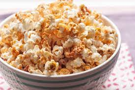

Kettle Corn

Description
Delight your taste buds with homemade kettle corn! This sweet and salty treat features popped corn kernels covered in a caramelized sugar glaze. Easy to make, its the perfect snack for movie nights or any occasion!
Ingredients
- 1/2 popcorn kernels
- 2 tbsp your favorite popping oil (my go-to is Peanut)
- 1/3 cup powdered sugar
- 1 tbsp brown sugar
- 1 tsp granulate salt (adjust to taste)
- 1/2 tsp vanilla
Steps
- In a small mixing bowl, combine all dry ingredients except popcorn kernels.
- Heat your popcorn popper over medium heat, add oil then kernels. Ensure after this point you are constantly stirring the kernels.
- After about a minute, add the dry ingredient mixture. It is very important after this addition that constant stirring is maintained or the sugar will burn!
- When sugar mixture begins to melt, slowly add vanilla, attempting to not pour directly on pan surface
- Continue stirring until popcorn begins popping, should be about 3 minutes from addition of kernels in step 2.
- At this point, cover your popper while continuing to stir (if possible).
- When popping slows to around 1 pop every 2 seconds, quickly remove popper from heat and transfer to serving bowl.
- Allow to cool for minimum 1 minute, sugar will be extremely hot!
- Serve and enjoy!